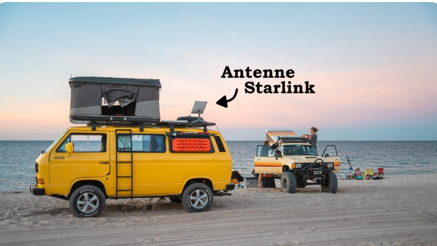
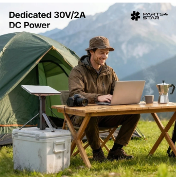
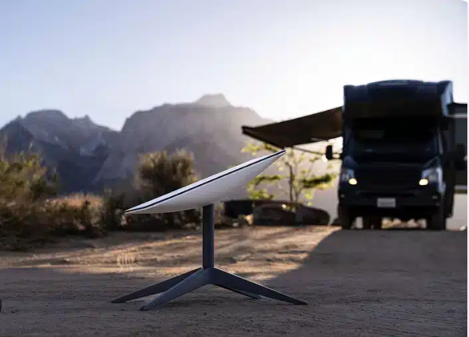
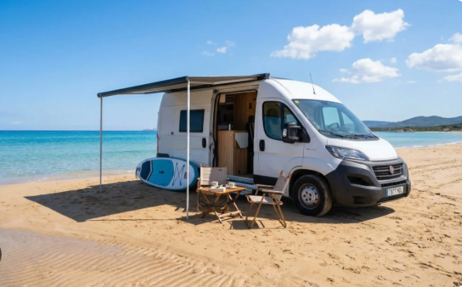

Démarrer avec Starlink
1. Contenu du kit (général)
- Antenne (dispositif) — capte les signaux des satellites.
- Routeur — diffuse le Wi‑Fi (selon la version du kit).
- Câbles et alimentation — respectez la longueur fournie ; évitez les rallonges non recommandées.
- Support — pied ou fixation ; une vue dégagée du ciel est essentielle.

2. Application Starlink
Téléchargez l’application officielle (iOS / Android). Elle guide l’activation, le scan du ciel (obstructions), les mises à jour et le suivi de la connexion. Dans l’app, ouvrez les réglages pour choisir la langue (français disponible). Le site du compte suit en général la même langue une fois connecté.
Télécharger sur Google Play (Android)
2 bis. Alimentation
Le kit est livré avec une alimentation adaptée (souvent secteur 110/230 V). En camping-car ou sur batterie, des solutions DC existent — respectez toujours les tensions et courants indiqués par le fabricant du matériel.

3. Choisir l’emplacement
- Place provisoire le terminal, lancez le test d’obstruction dans l’app.
- Évitez arbres, toits proches, cheminées, murs hauts.
- En hiver (Canada), prévoyez l’accès pour déneiger si l’antenne est au sol.
- Fixation permanente : respectez le vent et la charge sur le toit (fixations certifiées).

4. Mise en service
Branchez l’alimentation, attendez l’orientation automatique, connectez-vous au Wi‑Fi du routeur (mot de passe sur l’appareil ou dans l’app). Faites un test de débit ; notez la latence pour les appels vidéo.

5. Mobilité (Roam)
Fourgon, caravane ou séjour au bord de l’eau : le forfait doit autoriser la mobilité dans votre pays (ou à l’étranger selon l’offre). Mettez l’antenne en place à chaque arrêt et refaites un scan du ciel si besoin.

Vidéo — installation pas à pas
Deux courtes vidéos (français puis anglais) : cliquez sur la vignette pour lire dans la page, ou sur « YouTube » pour ouvrir dans l’application.
Les détails sur les forfaits sont sur Starlink.com une fois les étapes ci-dessus comprises.